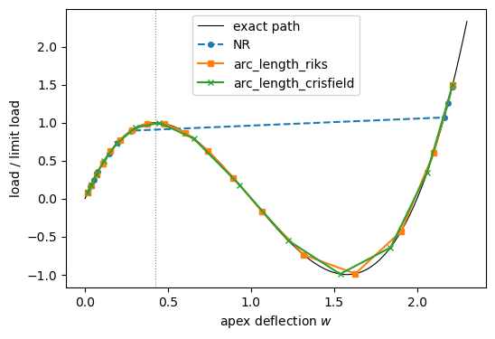
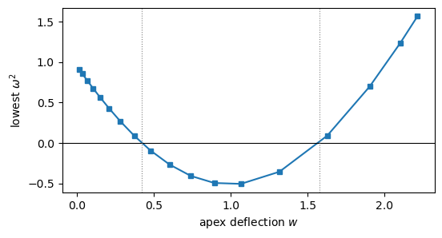

Tutorial: static, buckling, frequency and non-linear analyses of a von Mises truss#
This tutorial runs one of the analytic problems of the unit tests of structsolve, the function von_mises_truss of tests/analytic_problems.py, copied below, through the analyses of structsolve: linear static, linear buckling, frequency, and non-linear static with the Newton-Raphson and the arc-length methods.
The shallow von Mises truss of height 1 is loaded through a linear spring of stiffness \(k_s\). The degree of freedom 0 is the apex deflection \(w = c_0\), the degree of freedom 1 the displacement \(c_1\) of the loaded point, and the internal force vector is
with the tangent stiffness matrix \(\boldsymbol{K}_C + \boldsymbol{K}_G\), where \(\boldsymbol{K}_C\) is the linear stiffness matrix and \(\boldsymbol{K}_G\) contains the derivative \(3 w^2 - 6 w\) of the non-linear terms. The cubic \(F(w) = w^3 - 3 w^2 + 2 w = w (w - 1)(w - 2)\) is the load-deflection relation of the shallow truss of Crisfield [1], Section 1.2, eq. (1.7), p. 4, \(W = (EA/l^3)(z^2 w + \tfrac{3}{2} z w^2 + \tfrac{1}{2} w^3)\), with the deflection and the
load measured towards the inverted configuration, the height \(z = 1\) and \(EA/l^3 = 2\). It vanishes at the initial configuration \(w = 0\), at the flat configuration \(w = 1\) and at the inverted configuration \(w = 2\). Its derivative \(3 w^2 - 6 w + 2\) vanishes at the limit points \(w = 1 \mp 1/\sqrt{3}\): the truss reaches its first limit point at \(w_{lim} = 1 - 1/\sqrt{3}\), under the limit load \(F_{lim} = F(w_{lim}) = 2/(3\sqrt{3})\), and the second
one at \(w = 1 + 1/\sqrt{3}\), under the load \(-F_{lim}\). The reference load is frac times the limit load. These closed-form values are the references of the table at the end of the notebook.
The model is given to structsolve by the four callables of Analysis, which return the external and the internal force vectors and the two parts of the tangent stiffness matrix:
[1]:
%matplotlib inline
import numpy as np
import matplotlib.pyplot as plt
from scipy.sparse import csr_matrix
from structsolve import Analysis, freq, lb
frac = 1.5
ks = 10.
F_lim = 2/(3*np.sqrt(3))
w_lim = 1 - 1/np.sqrt(3)
fext = np.array([0., frac*F_lim])
kC = np.array([[2. + ks, -ks], [-ks, ks]])
def calc_fext(inc=1., silent=True):
return inc*fext
def calc_fint(c, silent=True):
w = c[0]
return np.array([w**3 - 3*w**2 + 2*w + ks*(c[0] - c[1]),
ks*(c[1] - c[0])])
def calc_kC(c=None, NLgeom=False, silent=True):
return csr_matrix(kC)
def calc_kG(c=None, NLgeom=False, silent=True):
w = c[0]
return csr_matrix(np.array([[3*w**2 - 6*w, 0.], [0., 0.]]))
def analysis(**kwargs):
an = Analysis(calc_fext=calc_fext, calc_fint=calc_fint, calc_kC=calc_kC,
calc_kG=calc_kG)
for name, value in kwargs.items():
setattr(an, name, value)
return an
print('reference load:', fext)
reference load: [0. 0.57735027]
Linear static analysis#
Analysis.static(NLgeom=False) solves \(\boldsymbol{K}_{C0} \boldsymbol{c} = \boldsymbol{F}_{ext}\) with the callables calc_kC() and calc_fext():
[2]:
an = analysis()
increments, cs = an.static(NLgeom=False, silent=True)
c_lin = cs[0]
print('linear solution:', c_lin)
linear solution: [0.28867513 0.34641016]
Linear buckling analysis#
The geometric stiffness matrix of the linear solution gives the eigenvalue problem \((\boldsymbol{K}_{C0} + \lambda \boldsymbol{K}_G(\boldsymbol{c}_{lin})) \boldsymbol{u} = \boldsymbol{0}\). With only two degrees of freedom the dense solver is used explicitly, sparse_solver=False, which returns all the load multipliers:
With \(\boldsymbol{K}_G\) of the state \(w_{lin}\), \(\det(\boldsymbol{K}_{C0} + \lambda \boldsymbol{K}_G) = k_s (2 + \lambda (3 w_{lin}^2 - 6 w_{lin}))\), and the closed-form load multiplier is \(\lambda_{lb} = 2/(6 w_{lin} - 3 w_{lin}^2)\), with \(w_{lin} = \mathrm{frac}\, F_{lim}/2\) the apex deflection of the linear solution (\(\boldsymbol{K}_{C0} \boldsymbol{c} = \boldsymbol{F}_{ext}\) gives \(2 c_0 = \mathrm{frac}\, F_{lim}\) and \(c_1 = c_0 + \mathrm{frac}\, F_{lim}/k_s\)).
[3]:
K0 = calc_kC()
KG = calc_kG(c_lin)
eigvals, eigvecs = lb(K0, KG, silent=True, sparse_solver=False)
print('load multipliers:', eigvals)
print('linear buckling estimate of the limit load factor:', eigvals[0])
print('limit load factor:', 1/frac)
load multipliers: [1.3494814 -inf]
linear buckling estimate of the limit load factor: 1.3494814008979579
limit load factor: 0.6666666666666666
The linear buckling analysis assumes a linear pre-buckling path, with \(\boldsymbol{K}_G\) proportional to the load. The path of the truss is strongly non-linear before its limit point, and the estimate is here about twice the limit load factor. The non-linear analyses below trace the actual path. The row of the loaded point is null in \(\boldsymbol{K}_G\), and the second load multiplier is infinite: it is printed as inf, or as a number of the order of \(10^{16}\), depending on
the round-off.
Non-linear static analyses#
The Newton-Raphson method controls the load factor, and the arc-length methods of Riks and Crisfield control the arc length, such that the load factor may decrease after the limit point:
[4]:
results = {}
for method in ['NR', 'arc_length_riks', 'arc_length_crisfield']:
an = analysis(NL_method=method, initialInc=0.05)
an.static(NLgeom=True, silent=True)
results[method] = (np.array(an.increments), np.array(an.cs))
print('%-21s %3d increments, last load factor %.3f'
% (method, len(an.increments), an.increments[-1]))
NR 12 increments, last load factor 1.000
arc_length_riks 18 increments, last load factor 1.000
arc_length_crisfield 14 increments, last load factor 1.000
All the analyses finish at the load factor 1.0. The load-displacement curves of an.increments and an.cs, with the load \(\lambda \, \mathrm{frac} \, F_{lim}\) normalized by the limit load, against the exact equilibrium path \(F = w^3 - 3 w^2 + 2 w\) of the apex:
[5]:
w = np.linspace(0, 2.3, 200)
fig, ax = plt.subplots(figsize=(6, 4))
ax.plot(w, (w**3 - 3*w**2 + 2*w)/F_lim, 'k-', lw=0.8, label='exact path')
styles = {'NR': 'o--', 'arc_length_riks': 's-', 'arc_length_crisfield': 'x-'}
for method, (inc, cs) in results.items():
ax.plot(cs[:, 0], inc*frac, styles[method], ms=4, label=method)
ax.axvline(w_lim, color='gray', ls=':', lw=0.8)
ax.set_xlabel('apex deflection $w$')
ax.set_ylabel('load / limit load')
ax.legend()
plt.show()

The Newton-Raphson increments follow the path below the limit load and then jump to the inverted configuration, where the load is again larger than the limit load: the analysis converges, but the unstable part of the path is skipped. The arc-length methods pass the limit point, the load factor decreasing and becoming negative during the snap-through, and reach the same final state:
[6]:
for method, (inc, cs) in results.items():
print('%-21s largest jump of w: %.3f, final c: %s'
% (method, np.diff(cs[:, 0]).max(), cs[-1]))
NR largest jump of w: 1.889, final c: [2.21463146 2.27236649]
arc_length_riks largest jump of w: 0.311, final c: [2.21463146 2.27236649]
arc_length_crisfield largest jump of w: 0.313, final c: [2.21463146 2.27236649]
Frequency analysis along the path#
With unit masses at both degrees of freedom, \(\boldsymbol{M} = \boldsymbol{I}\), the frequency analysis of the tangent stiffness matrix \(\boldsymbol{K}_T(\boldsymbol{c}) = \boldsymbol{K}_C + \boldsymbol{K}_G(\boldsymbol{c})\) at each converged state of the Riks analysis gives \(\omega^2 = -\lambda^2\). The lowest \(\omega^2\) vanishes where \(\boldsymbol{K}_T\) is singular, at the limit points \(w = 1 \mp 1/\sqrt{3}\), and is negative between them, where the equilibrium is unstable:
[7]:
inc, cs = results['arc_length_riks']
M = csr_matrix(np.eye(2))
omega2 = []
for c in cs:
KT = calc_kC(c, NLgeom=True) + calc_kG(c, NLgeom=True)
lambda2, _ = freq(KT, M, silent=True, sparse_solver=False,
symmetric=True, sort=False)
omega2.append(-lambda2.max())
fig, ax = plt.subplots(figsize=(6, 3))
ax.plot(cs[:, 0], omega2, 's-', ms=4)
ax.axhline(0, color='k', lw=0.8)
for wl in (1 - 1/np.sqrt(3), 1 + 1/np.sqrt(3)):
ax.axvline(wl, color='gray', ls=':', lw=0.8)
ax.set_xlabel('apex deflection $w$')
ax.set_ylabel(r'lowest $\omega^2$')
plt.show()

The converged states where the lowest \(\omega^2\) changes sign bracket the two limit points. Linear interpolation of \(\omega^2\) between them gives the apex deflections and the load factors of the limit points, with the error of the interpolation over one increment. The Riks analysis is repeated with initialInc = maxInc = 0.01, which gives more increments along the path and smaller errors:
[8]:
def limit_points(inc, cs):
omega2 = []
for c in cs:
KT = calc_kC(c, NLgeom=True) + calc_kG(c, NLgeom=True)
lambda2, _ = freq(KT, M, silent=True, sparse_solver=False,
symmetric=True, sort=False)
omega2.append(-lambda2.max())
omega2 = np.array(omega2)
w_cr, P_cr = [], []
for i in np.flatnonzero(np.sign(omega2[:-1]) != np.sign(omega2[1:])):
t = omega2[i]/(omega2[i] - omega2[i + 1])
w_cr.append(cs[i, 0] + t*(cs[i + 1, 0] - cs[i, 0]))
P_cr.append((inc[i] + t*(inc[i + 1] - inc[i]))*frac)
return w_cr, P_cr
an = analysis(NL_method='arc_length_riks', initialInc=0.01, maxInc=0.01)
an.static(NLgeom=True, silent=True)
limits = {'Riks above': limit_points(inc, cs),
'Riks, maxInc = 0.01': limit_points(np.array(an.increments), np.array(an.cs))}
print('Riks, maxInc = 0.01: %d increments' % len(an.increments))
for key, (w_cr, P_cr) in limits.items():
for wi, Pi in zip(w_cr, P_cr):
print('%-20s lowest omega^2 vanishes at w = %.4f, load / limit load = %.4f'
% (key, wi, Pi))
Riks, maxInc = 0.01: 582 increments
Riks above lowest omega^2 vanishes at w = 0.4249, load / limit load = 0.9872
Riks above lowest omega^2 vanishes at w = 1.5646, load / limit load = -0.9382
Riks, maxInc = 0.01 lowest omega^2 vanishes at w = 0.4227, load / limit load = 1.0000
Riks, maxInc = 0.01 lowest omega^2 vanishes at w = 1.5773, load / limit load = -1.0000
Results against the reference values#
The references are the closed-form values written above: the linear solution \(c_0 = \mathrm{frac}\, F_{lim}/2\), \(c_1 = c_0 + \mathrm{frac}\, F_{lim}/k_s\), the linear buckling multiplier \(\lambda_{lb} = 2/(6 w_{lin} - 3 w_{lin}^2)\), the limit points \(w = 1 \mp 1/\sqrt{3}\) under the loads \(\pm F_{lim}\), and the final state on the inverted branch, the root \(w > 1 + 1/\sqrt{3}\) of \(F(w) = \mathrm{frac}\, F_{lim}\) with \(c_1 = w + \mathrm{frac}\, F_{lim}/k_s\). The last rows give, for each non-linear analysis, the largest distance of the load of its converged states from the exact path, \(\max_i |\lambda_i\, \mathrm{frac}\, F_{lim} - F(w_i)|\), normalized by \(F_{lim}\). The relative difference is \((\text{structsolve} - \text{reference})/|\text{reference}|\):
[9]:
F_path = lambda w: w**3 - 3*w**2 + 2*w
P_ext = frac*F_lim
w_lin = P_ext/2
roots = np.roots([1., -3., 2., -P_ext])
w_end = roots[np.abs(roots.imag) < 1e-12].real.max()
rows = [
('linear static, c_0', c_lin[0], w_lin),
('linear static, c_1', c_lin[1], w_lin + P_ext/ks),
('linear buckling multiplier', eigvals[0], 2/(6*w_lin - 3*w_lin**2)),
]
for key, (w_cr, P_cr) in limits.items():
rows += [('1st limit point, w, %s' % key, w_cr[0], 1 - 1/np.sqrt(3)),
('1st limit point, load / F_lim, %s' % key, P_cr[0], 1.),
('2nd limit point, w, %s' % key, w_cr[1], 1 + 1/np.sqrt(3)),
('2nd limit point, load / F_lim, %s' % key, P_cr[1], -1.)]
for method, (inc_m, cs_m) in results.items():
rows += [('%s, final w' % method, cs_m[-1, 0], w_end),
('%s, final c_1' % method, cs_m[-1, 1], w_end + P_ext/ks)]
print('%-52s %13s %13s %10s' % ('quantity', 'structsolve', 'reference', 'rel. diff'))
for name, value, ref in rows:
print('%-52s %13.6f %13.6f %10.1e' % (name, value, ref, (value - ref)/abs(ref)))
print()
print('%-52s %13s' % ('distance from the exact path', 'max / F_lim'))
for method, (inc_m, cs_m) in results.items():
print('%-52s %13.1e' % (method, np.abs(inc_m*P_ext - F_path(cs_m[:, 0])).max()/F_lim))
quantity structsolve reference rel. diff
linear static, c_0 0.288675 0.288675 -7.7e-16
linear static, c_1 0.346410 0.346410 -8.0e-16
linear buckling multiplier 1.349481 1.349481 -9.9e-16
1st limit point, w, Riks above 0.424884 0.422650 5.3e-03
1st limit point, load / F_lim, Riks above 0.987189 1.000000 -1.3e-02
2nd limit point, w, Riks above 1.564626 1.577350 -8.1e-03
2nd limit point, load / F_lim, Riks above -0.938222 -1.000000 6.2e-02
1st limit point, w, Riks, maxInc = 0.01 0.422652 0.422650 4.4e-06
1st limit point, load / F_lim, Riks, maxInc = 0.01 0.999989 1.000000 -1.1e-05
2nd limit point, w, Riks, maxInc = 0.01 1.577349 1.577350 -8.7e-07
2nd limit point, load / F_lim, Riks, maxInc = 0.01 -0.999992 -1.000000 8.0e-06
NR, final w 2.214631 2.214631 6.0e-16
NR, final c_1 2.272366 2.272366 3.9e-16
arc_length_riks, final w 2.214631 2.214631 4.0e-16
arc_length_riks, final c_1 2.272366 2.272366 3.9e-16
arc_length_crisfield, final w 2.214631 2.214631 1.3e-12
arc_length_crisfield, final c_1 2.272366 2.272366 1.3e-12
distance from the exact path max / F_lim
NR 7.4e-10
arc_length_riks 7.4e-11
arc_length_crisfield 5.1e-10
The linear solution, the linear buckling multiplier and the final states agree with the closed-form values to the round-off and the convergence tolerance, and every converged state of the three analyses lies on the exact path. The limit points found from the sign change of the lowest \(\omega^2\) are approximate, because \(\omega^2\) is interpolated linearly over one increment of the Riks analysis: they approach the exact ones as the increments become smaller.
References#
Crisfield, M.A., Non-linear Finite Element Analysis of Solids and Structures, Volume 1: Essentials, John Wiley & Sons, Chichester, 1991.